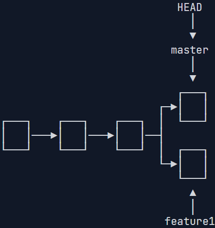
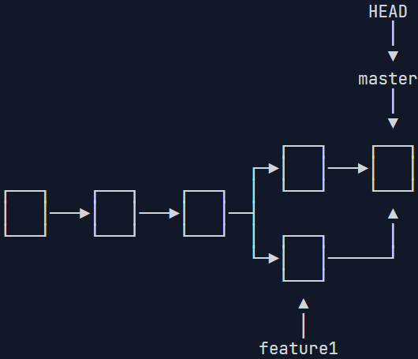
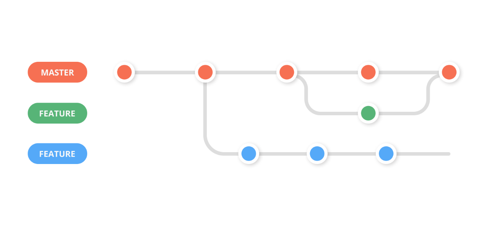
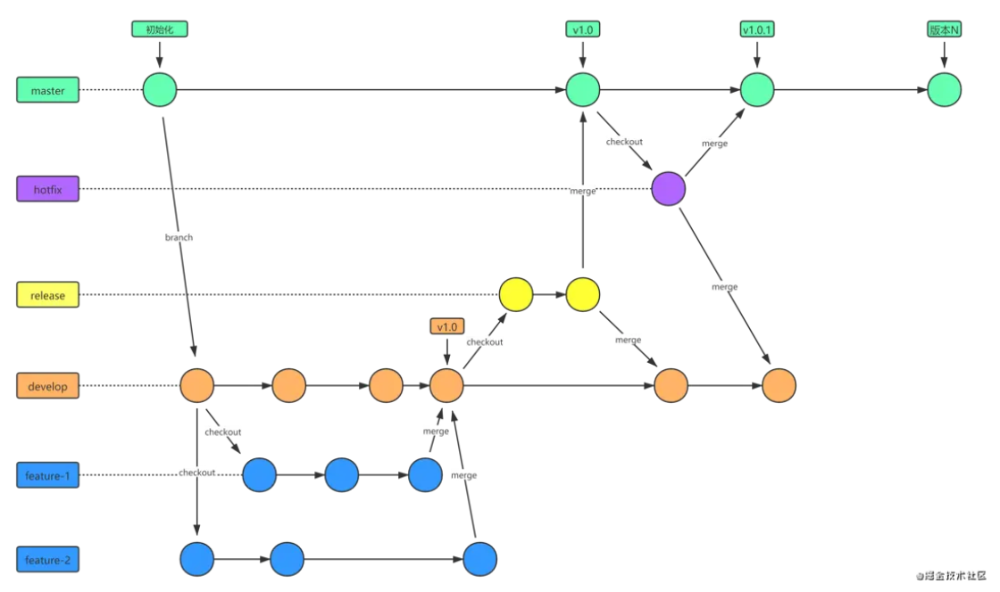
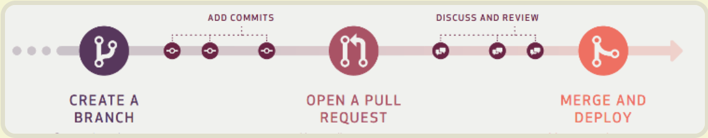

版本控制（Git）¶
Resources：
版本控制(Git) · the missing semester of your cs education
[自制双语字幕] 计算机教育缺失的一课(2020) - 第6讲 - 版本控制(Git)_哔哩哔哩_bilibili
【研1基本功 别人不教的，那就我来】SSH+Git+Gitee+Vscode 学会了就是代码管理大师_哔哩哔哩_bilibili
https://github.com/git/git/blob/master/Documentation/giteveryday.adoc
版本控制系统 (VCSs) 是一类用于追踪源代码（或其他文件、文件夹）改动的工具。顾名思义，这些工具可以帮助我们管理代码的修改历史；不仅如此，它还可以让协作编码变得更方便。VCS 通过一系列的快照将某个文件夹及其内容保存了起来，每个快照都包含了顶级目录中所有的文件或文件夹的完整状态。同时它还维护了快照创建者的信息以及每个快照的相关信息等等。
为什么说版本控制系统非常有用？即使您只是一个人进行编程工作，它也可以帮您创建项目的快照，记录每个改动的目的、基于多分支并行开发等等。和别人协作开发时，它更是一个无价之宝，您可以看到别人对代码进行的修改，同时解决由于并行开发引起的冲突。
尽管版本控制系统有很多， 其事实上的标准则是 Git 。因为 Git 接口的抽象泄漏（leaky abstraction）问题，通过自顶向下的方式（从命令行接口开始）学习 Git 可能会让人感到非常困惑。
尽管 Git 的接口有些丑陋，但是它的底层设计和思想却是非常优雅的。丑陋的接口只能靠死记硬背，而优雅的底层设计则非常容易被人理解。因此，通过一种自底向上的方式学习 Git是很好的。先从数据模型开始，最后再学习它的抽象接口，一旦搞懂了 Git 的数据模型，再学习其接口并理解这些接口是如何操作数据模型的就非常容易了。
Git的数据模型¶
Git 拥有一个经过精心设计的模型，这使其能够支持版本控制所需的所有特性，例如维护历史记录、支持分支和促进协作。
空间（文件，文件夹） & 时间（维护历史记录）
对文件系统建模：快照Blob¶
Git 将顶级目录中的文件和文件夹作为集合，并通过一系列快照来管理其历史记录。在 Git 的术语里，文件被称作 Blob 对象（数据对象），也就是一组数据。目录则被称之为“树”，它将名字与 Blob 对象或树对象进行映射（使得目录中可以包含其他目录）。快照则是被追踪的最顶层的树，它可以被看作是带时间戳的文件夹副本。例如，一个树看起来可能是这样的：
<root> (tree)
|
+- foo (tree)
| |
| + bar.txt (blob, contents = "hello world")
|
+- baz.txt (blob, contents = "git is wonderful")
这个顶层的树包含了两个元素，一个名为 “foo” 的树（它本身包含了一个 blob 对象 “bar.txt”），以及一个 blob 对象 “baz.txt”。
对历史记录建模：关联快照¶
版本控制系统和快照有什么关系呢？历史记录就是一系列快照，线性历史记录是一种最简单的模型，它包含了一组按照时间顺序线性排列的快照。不过出于种种原因，Git 并没有采用这样的模型。
在 Git 中，历史记录是一个由快照组成的有向无环图，这代表 Git 中的每个快照都有一系列的“父辈”，也就是其之前的一系列快照。注意，快照具有多个“父辈”而非一个，因为某个快照可能由多个父辈而来（因此这是一个图结构而非线性结构）。例如，经过合并后的两条分支。
在 Git 中，这些快照被称为“提交”。通过可视化的方式来表示这些历史提交记录时，看起来差不多是这样的：
o <-- o <-- o <-- o
^
\
--- o <-- o
上面是一个 ASCII 码构成的简图，其中的 o 表示一次提交（快照）。（继承关系来表现层次）
箭头指向了当前提交的父辈（这是一种“在…之前”，而不是“在…之后”的关系）。在第三次提交之后，历史记录分岔成了两条独立的分支。这可能因为此时需要同时开发两个不同的特性，它们之间是相互独立的。开发完成后，这些分支可能会被合并并创建一个新的提交，这个新的提交会同时包含这些特性。新的提交会创建一个新的历史记录，看上去像这样：
o <-- o <-- o <-- o <---- o
^ /
\ v
--- o <-- o
Git 中的提交是不可改变的。但这并不代表错误不能被修改，只不过这种“修改”实际上是创建了一个全新的提交记录。而引用（参见下文）则被更新为指向这些新的提交。
数据模型及其伪代码表示¶
以伪代码的形式来学习 Git 的数据模型，可能更加清晰：
// 文件就是一组数据
type blob = array<byte>
// 一个包含文件和目录的目录
type tree = map<string, tree | blob>
// 每个提交都包含一个父辈，元数据和顶层树（组合）
type commit = struct {
parents: array<commit>
author: string
message: string
snapshot: tree
}
这是一种简洁的历史模型。
对象和内存寻址¶
Git 中的对象可以是 blob、树或提交：
type object = blob | tree | commit
Git 在储存数据时，所有的对象都会基于它们的 SHA-1 哈希 进行寻址。
objects = map<string, object>
def store(object):
id = sha1(object)
objects[id] = object
def load(id):
return objects[id]
Blobs、树和提交都一样，它们都是对象。当它们引用其他对象时，它们并没有真正的在硬盘上保存这些对象，而是仅仅保存了它们的哈希值作为引用。
例如，上面例子中的树（可以通过 git cat-file -p 698281bc680d1995c5f4caaf3359721a5a58d48d 来进行可视化），看上去是这样的：
100644 blob 4448adbf7ecd394f42ae135bbeed9676e894af85 baz.txt
040000 tree c68d233a33c5c06e0340e4c224f0afca87c8ce87 foo
树本身会包含一些指向其他内容的指针，例如 baz.txt (blob) 和 foo (树)。如果我们用 git cat-file -p 4448adbf7ecd394f42ae135bbeed9676e894af85，即通过哈希值查看 baz.txt 的内容，会得到以下信息：
git is wonderful
引用¶
现在，所有的快照都可以通过它们的 SHA-1 哈希值来标记了。但这也太不方便了，谁也记不住一串 40 位的十六进制字符。
针对这一问题，Git 的解决方法是给这些哈希值赋予人类可读的名字，也就是引用（references）。引用是指向提交的指针。与对象不同的是，它是可变的（引用可以被更新，指向新的提交）。例如，master 引用通常会指向主分支的最新一次提交。
references = map<string, string>
def update_reference(name, id):
references[name] = id
def read_reference(name):
return references[name]
def load_reference(name_or_id):
if name_or_id in references:
return load(references[name_or_id])
else:
return load(name_or_id)
这样，Git 就可以使用诸如 “master” 这样人类可读的名称来表示历史记录中某个特定的提交，而不需要在使用一长串十六进制字符了。同时，我们将“master”这样的引用视为“分支”的标识。
有一个细节需要我们注意， 通常情况下，我们会想要知道“我们当前所在位置”，并将其标记下来。这样当我们创建新的快照的时候，我们就可以知道它的相对位置（如何设置它的“父辈”）。在 Git 中，我们当前的位置有一个特殊的索引，它就是 “HEAD”。
仓库¶
最后，我们可以粗略地给出 Git 仓库的定义了：对象 和 引用。
在硬盘上，Git 仅存储对象和引用：因为其数据模型仅包含这些东西。所有的 git 命令都对应着对提交树的操作，例如增加对象，增加或删除引用。
当您输入某个指令时，请思考一下这条命令是如何对底层的图数据结构进行操作的。另一方面，如果您希望修改提交树，例如“丢弃未提交的修改和将 ‘master’ 引用指向提交 5d83f9e 时，有什么命令可以完成该操作（针对这个具体问题，您可以使用 git checkout master; git reset --hard 5d83f9e）
抽象：利用组合形成的层次关系如下
文件，文件夹 -> Blob对象，树 -> 快照（顶层树）-不同历史记录下-> commit
Blob，树（空间），commit（时间）均是对象，对象需要名字索引（哈希）
以上均是不可变的；还要提供可变的能力表现状态的迁移（提供引用/指针，破坏引用透明性，但提供了状态迁移的表现）
对象加上它的名字引用就是Git仓库
暂存区¶
Git 中还包括一个和数据模型完全不相关的概念，但它确是创建提交的接口的一部分。
就上面介绍的快照系统来说，您也许会期望它的实现里包括一个 “创建快照” 的命令，该命令能够基于当前工作目录的当前状态创建一个全新的快照。有些版本控制系统确实是这样工作的，但 Git 不是。我们希望简洁的快照，而且每次从当前状态创建快照可能效果并不理想。例如，考虑如下场景，您开发了两个独立的特性，然后您希望创建两个独立的提交，其中第一个提交仅包含第一个特性，而第二个提交仅包含第二个特性。或者，假设您在调试代码时添加了很多打印语句，然后您仅仅希望提交和修复 bug 相关的代码而丢弃所有的打印语句。
Git 处理这些场景的方法是使用一种叫做 “暂存区（staging area）”的机制，它在Git工作流中位于工作目录（修改区）和历史记录（提交）之间，允许您指定下次快照中要包括那些改动。
在我们使用Git进行工作时，每次输入的命令，要注意它对我们的工作目录（修改区），暂存区和历史记录（数据模型）都会造成什么变化，这是记忆和掌握Git的命令行接口的关键。
Git 的命令行接口¶
基础代码管理¶
-
git help <command>: 获取 git 命令的帮助信息 -
git init: 创建一个新的 git 仓库，其数据会存放在一个名为.git的目录下 -
git status: 显示当前的仓库状态 -
git add <filename>: 添加文件到暂存区 -
git add .:添加仓库中所有文件到暂存区 -
git commit: 创建一个新的提交 -
git commit -m "<message>" -
如何编写 良好的提交信息!
-
为何要 编写良好的提交信息
-
git log: 显示历史日志 -
git log --all --graph --decorate: 可视化历史记录（有向无环图） -
git show <object>：指定要显示的 Git 对象。可以是提交哈希、标签、分支名等。 -
git diff <filename>: 显示HEAD快照与暂存区文件的差异 -
git diff <revision> <revision> <filename>: 显示某个文件两个版本之间的差异
<revision> 表示提交对应的哈希字符串或引用名称或标签名或相对引用，一般命令中默认则为HAED
git checkout <revision>: 更新 HEAD 和目前的分支（将HEAD指针转移，指向<reversion>提交），并让整个工作目录中的文件和<revision>提交完全一致
分支和合并¶
git branch: 显示本地仓库的所有分支（本质上就是引用）git branch -vv：显示所有分支的详细信息，包括跟踪的远程分支信息git branch <name>: 创建分支（本质上就是一个引新的用）git branch -d <name>:删除分支（本质上是删除一个引用）- 在 Git 中，分支只是提交的有向无环图 (DAG) 中提交的指针（引用）。这意味着删除分支只会删除对提交的引用，这可能会使 DAG 中的某些提交无法访问，从而不可见。但是，在已删除分支上的所有提交仍将在存储库中，至少在无法访问的提交被修剪之前（例如使用
git gc） - 如果分支在被删除之前被合并到另一个分支，那么当第一个分支被删除时，所有提交仍然可以从另一个分支访问。它们保持原样；如果分支在没有被合并到另一个分支的情况下被删除，那么该分支中的提交（直到仍然可以访问的提交的分叉点）将不再可见。后者这种情况下使用
git branch -d将拒绝删除分支，使用 strong的git branch -D可强制删除分支. git checkout -b <name>: 创建分支并切换到该分支- 相当于
git branch <name>; git checkout <name> git switch <name>：v2.23版本后专门用于切换分支的命令。取代git checkout <分支名>。git switch -c <新分支名>：创建并切换分支，取代git checkout -b。git merge <revision>: 合并到当前分支git mergetool: 使用工具来处理合并冲突
git并行开发的分支管理¶
分支合并的类型：
| 类型 | 命令 | 特点 |
|---|---|---|
| Fast-forward | 默认模式 | 如果当前分支是目标分支的祖先，则直接移动 HEAD 指针 |
| Recursive | 默认两路合并 | 自动合并多个分支的内容，工作原理（Three-way Merge）：Git 会找到两个分支的第一个共同祖先提交（common ancestor），然后对三方（共同祖先、当前分支、要合并的分支）的内容进行合并，并创建一个新的提交来记录这个合并结果，由当前分支指向它。 |
| Octopus | git merge branch1 branch2 ... |
多分支同时合并 |
| No-fast-forward | git merge --no-ff feature/auth |
显式强制创建合并提交，保留历史结构（即使可以进行快进合并，也会强制创建一个合并提交） |
| Squash压缩合并 | git merge--squash branch |
把 branch 的所有提交合并到当前分支，但只产生一个新的合并提交，当前分支的提交历史中不会保留 branch 的多次提交记录，即不会记录它和当前分支的合并关系 |
✅ 推荐使用 --no-ff 来保持历史可读性，对于跟踪功能分支的生命周期非常有用，尤其是在主分支合并 feature 分支时。
（使用 git mergetool） 解决合并两个分支时出现的冲突
Git 使用三路合并算法（Three-way Merge），基于以下三个版本进行合并：
- 当前分支（HEAD）
- 要合并的分支（feature/auth）
- 公共祖先（Common Ancestor）
因此如果两个分支都修改了同一文件的相同区域，Git 就无法确定保留哪一部分内容，于是标记为冲突。
总结下来，当执行以下操作时可能触发合并冲突：
git merge（合并分支）git pull（拉取远程代码）git rebase（变基操作）git cherry-pick（选择性提交）
此时 Git 会提示 CONFLICT 并终止操作，需手动解决冲突。
一般工作流程：
- 配置合并工具（以 KDiff3 为例）
git config --global merge.tool kdiff3 # 设置默认工具
git config --global mergetool.kdiff3.path "/usr/bin/kdiff3" # 指定工具路径
- 查看冲突文件
git status
# 冲突文件会被标记为 Unmerged paths。
- 启动合并工具
git mergetool
# 此命令会依次打开所有冲突文件对应的合并工具界面。
# 或者手动打开冲突文件检查
- 标记冲突已解决
git add <file> # 将解决后的文件标记为已解决
git commit
--or--
git merge --continue # 提交合并结果，Git 会自动生成一个合并提交信息，如需修改可手动编辑。
主流mergetool（合并工具）及配置：
-
Git 内置工具：diff3
-
特点：命令行工具，直接展示冲突标记。
<<<<<<< HEAD
这是当前分支的代码（例如，在 master 分支上合并 feature 分支，那么这里就是 master 分支的代码）
=======
这是要合并进来的分支的代码（例如，feature 分支的代码）
>>>>>>> branch-name
-
使用场景：适合简单冲突的快速修复。
-
KDiff3（跨平台）
-
安装：
- Linux:
sudo apt install kdiff3 - macOS:
brew install kdiff3 - Windows: 官网下载安装包
- Linux:
-
配置：
git config --global merge.tool kdiff3 git config --global mergetool.kdiff3.trustExitCode true -
优点：三窗格对比（本地/远程/基准），可视化操作。
-
Beyond Compare（商业软件）
-
配置
git config --global merge.tool bc3 git config --global mergetool.bc3.path "/Applications/Beyond Compare.app/Contents/MacOS/bcomp" -
优点：强大的文件对比与合并功能，支持文件夹同步。
-
Visual Studio Code（内置合并工具）
-
使用方法：
- 打开冲突文件：VSCode会高亮显示冲突的文件，在VSCode中打开存在冲突的文件，可以看到冲突的代码段，会显示
Current Changes和Incoming Changes。 - 解决冲突：VSCode提供了多个选项帮助解决冲突，例如“Accept Current Change”（接受当前更改）、“Accept Incoming Change”（接受传入更改）、“Accept Both Changes”（接受两者），或者手动编辑冲突部分。
- 标记冲突已解决：解决冲突后，保存文件，并在终端或VSCode的源代码控制面板中提交快照。
- 打开冲突文件：VSCode会高亮显示冲突的文件，在VSCode中打开存在冲突的文件，可以看到冲突的代码段，会显示
- 优点：无需额外配置，适合日常开发环境。
现在，我们从示例开始演示分支管理操作：
首先，我们创建dev分支，然后切换到dev分支：
$ git checkout -b dev
Switched to a new branch 'dev'
用git branch命令查看当前分支：
$ git branch
* dev
master
然后，我们就可以在dev分支上正常提交，比如对readme.txt做个修改，加上一行：
Creating a new branch is quick.
然后提交：
$ git add readme.txt
$ git commit -m "branch test"
[dev b17d20e] branch test
1 file changed, 1 insertion(+)
现在，dev分支的工作完成，我们就可以切换回master分支：
$ git checkout master
Switched to branch 'master'
换回master分支后，再查看一个readme.txt文件，刚才添加的内容不见了！因为那个提交是在dev分支上，而master分支此刻的提交点并没有变。
在，我们把dev分支的工作成果合并到master分支上：
$ git merge dev
Updating d46f35e..b17d20e
Fast-forward
readme.txt | 1 +
1 file changed, 1 insertion(+)
注意到上面的Fast-forward信息，Git告诉我们，这次合并是“快进模式”，也就是直接把master指向dev的当前提交，所以合并速度非常快。
合并完成后，就可以放心地删除dev分支了：
$ git branch -d dev
Deleted branch dev (was b17d20e).
准备新的feature1分支，继续我们的新分支开发：
$ git switch -c feature1
Switched to a new branch 'feature1'
修改readme.txt最后一行，改为：
Creating a new branch is quick AND simple.
在feature1分支上提交：
$ git add readme.txt
$ git commit -m "AND simple"
[feature1 14096d0] AND simple
1 file changed, 1 insertion(+), 1 deletion(-)
切换到master分支：
$ git switch master
Switched to branch 'master'
Your branch is ahead of 'origin/master' by 1 commit.
(use "git push" to publish your local commits)
Git还会自动提示我们当前master分支比远程的master分支要超前1个提交。
在master分支上把readme.txt文件的最后一行改为：
Creating a new branch is quick & simple.
提交：
$ git add readme.txt
$ git commit -m "& simple"
[master 5dc6824] & simple
1 file changed, 1 insertion(+), 1 deletion(-)
现在，master分支和feature1分支各自都分别有新的提交，变成了这样：

这种情况下，Git无法执行“快速合并”，只能试图把各自的修改合并起来，但这种合并就可能会有冲突，我们试试看：
$ git merge feature1
Auto-merging readme.txt
CONFLICT (content): Merge conflict in readme.txt
Automatic merge failed; fix conflicts and then commit the result.
果然冲突了！Git告诉我们，readme.txt文件存在冲突，必须手动解决冲突后再提交。git status也可以告诉我们冲突的文件：
$ git status
On branch master
Your branch is ahead of 'origin/master' by 2 commits.
(use "git push" to publish your local commits)
You have unmerged paths.
(fix conflicts and run "git commit")
(use "git merge --abort" to abort the merge)
Unmerged paths:
(use "git add <file>..." to mark resolution)
both modified: readme.txt
no changes added to commit (use "git add" and/or "git commit -a")
我们可以直接查看readme.txt的内容：
Git is a distributed version control system.
Git is free software distributed under the GPL.
Git has a mutable index called stage.
Git tracks changes of files.
<<<<<<< HEAD
Creating a new branch is quick & simple.
=======
Creating a new branch is quick AND simple.
>>>>>>> feature1
Git用<<<<<<<，=======，>>>>>>>标记出不同分支的内容，我们修改如下后保存：
Git is a distributed version control system.
Git is free software distributed under the GPL.
Git has a mutable index called stage.
Git tracks changes of files.
Creating a new branch is quick and simple.
再提交：
$ git add readme.txt
$ git commit -m "conflict fixed"
[master cf810e4] conflict fixed
现在，master分支和feature1分支变成了下图所示：

最后，可以正常删除feature1分支：
$ git branch -d feature1
Deleted branch feature1 (was 14096d0).
远端操作¶
-
git remote: 列出当前仓库的远端 -
git remote -v：列出当前仓库中已配置的远程仓库，并显示它们的 URL。 git remote show <remote_name>：显示指定远程仓库的详细信息，包括 URL 和跟踪分支。git remote add <remote_name> <remote_url>：添加一个新的远程仓库。指定一个远程仓库的名称和 URL，将其添加到当前仓库中。git remote rename <old_name> <new_name>：将已配置的远程仓库重命名。git remote remove <remote_name>：从当前仓库中删除指定的远程仓库。-
git remote set-url <remote_name> <new_url>：修改指定远程仓库的 URL。 -
git remote add <name> <url>: 添加一个远端（<name>是为远程仓库起的名称，一般叫做origin） -
git push <remote> <local branch>:<remote branch>: 将对象传送至远端并更新远端引用 -
该命令会在远程仓库创建一个新分支或更新上面的一个分支
- 省略
<remote branch>：本地分支名和远程分支名一样的情况下，可以省略；如果远程主机中不存在该分支，那么会被创建。
- 省略
git push --all <remote_name>：不管是否存在对应的远程分支，将本地的所有分支都推送到远程主机<remote_name>，这时需要使用–all选项。-
git push origin :master等价于git push origin --delete master：如果省略本地分支名，则表示删除指定的远程分支，因为这等同于推送一个空的本地分支到远程分支。 -
Git可以用一些方法维护自己本地仓库的分支和远程仓库某分支的关联，这样
git push就可以简化输入，它会知道当前分支对应的远端分支并自动扩展所有的参数。git branch --set-upstream-to=<remote/remote branch>(<remote/remote branch>,例如origin/master，)：设置当前分支跟踪来自origin的master分支。- 最初使用
git push完整命令时，顺便添加选项-u或--set-upstream，这会将本地分支与远程分支关联。 git branch --unset-upstream <branch name>: 解除关联git branch -vv: 查看本地分支与远程分支的关联关系
-
git fetch <remote>: 与远程仓库通信，从远端获取对象/索引但不改变当前本地的对象与引用（若只有一个远程仓库，则<remote>默认直接使用它） -
git pull: （参数同git push）相当于git fetch; git merge -
git clone <url> <folder name>: 从远端下载仓库并创建自己的本地副本(<folder name>默认为当前文件夹) -
这是一个复合命令，当执行
git clone时，Git 在后台自动执行了三个关键步骤：-
初始化（
git init）：在指定的目录（或默认使用远程仓库名作为目录名）中，创建一个新的本地仓库。这会生成一个.git文件夹，里面包含了所有 Git 管理项目所需的骨架结构（如 objects, refs 等目录）。 -
抓取（
git fetch）：与远程仓库（如 GitHub、GitLab 或另一个服务器上的仓库）建立连接，并下载其所有数据。这包括： -
所有提交历史（Commit Objects）：整个项目的所有版本快照。
- 所有分支（Branches）：远程仓库上的
main,master,develop,feature等所有分支。这些分支在本地被存储为 远程跟踪分支（Remote-Tracking Branches），格式为<remote>/<branch>（例如origin/main）。 - 所有标签（Tags）：项目的所有标记版本。
此时，你的本地仓库已经有了远程仓库的完整副本，但工作目录里还是空的。
- 检出（
git checkout）：“检出”（Checkout）是什么意思？
它的本质是：让工作目录中的文件内容匹配某个特定提交（或分支）的状态。
在
clone的最后，Git 会自动执行一次git checkout，它做两件事： a. 确定目标：默认情况下，它会找到远程仓库的默认分支（通常是origin/main或origin/master）。 b. 创建并切换分支：它会在本地创建一个同名的分支（main或master），并将这个本地分支指向刚刚下载的origin/main所指向的那个最新提交。 c. 更新工作目录：最后，Git 将那个最新提交所对应的所有文件（代码、文档等）提取出来，并放置到你的工作目录中。这样，你就能看到一个完整的、可编译、可运行的项目代码了。 -
-
-b <分支名>或--branch <分支名>：指定要克隆后立即检出的特定分支，而不是远程的默认分支。 --depth <数字>：进行浅克隆。只下载最近的 n 次提交历史，而不是整个历史。这可以极大加快克隆速度，特别适用于历史非常悠久的大型项目。--single-branch：只克隆一个分支的完整历史（默认是远程的默认分支，也可与-b联用指定其他分支）。这比--depth更能减少下载数据量。-o <名称>或--origin <名称>：自定义远程仓库的简称。默认的简称是origin，我们可以用它改成别的。
撤销与改变工作目录¶
git commit --amend: 修改最近的一次提交（实际工作方式是创建一个新的提交来替换掉最新的提交，而不是在原提交上打补丁，因此，它会改变提交的哈希值）
e.g.
| 功能 | 命令示例 | 适用场景 |
|---|---|---|
| 修改提交信息 | git commit --amend 或 git commit --amend -m "新信息" |
提交信息有拼写错误或描述不清。 |
| 添加漏掉的文件 | git add <漏掉的文件> -> git commit --amend |
提交后发现少加了文件或还有小修改。 |
| 修改作者信息 | git commit --amend --author="新作者信息" |
配置错误，用了错误的用户名/邮箱提交。 |
-
git reset: 撤销更改和移动当前分支的指向（HEAD），它有三种模式（从三个区{工作目录修改区，暂存区，历史记录}变动的表现来划分）： -
git reset --soft <revision>：最温和的重置（只动历史）。它移动分支指针（HEAD 和 分支 移动到目标提交）；暂存区现在会包含<revision>那次提交之后的所有更改，就像已经用git add把它们暂存了一样；工作目录保持不变，<revision>后对所有文件的修改都还在。技巧：把之前几次提交合并成一次更整洁的提交
相对引用：
git reset HEAD~1：沿主干线回溯，重置到上一个提交（HEAD的父提交），~1表示向上回溯一代
git reset HEAD^1：将分支重置到当前提交的第一个父提交；在线性历史中，这两者是相同的，因为线性历史上的每个提交都只有一个父提交，HEAD^和HEAD~1指向的是同一个提交。只有在存在合并提交且你需要选择非第一个父提交时，它们才有区别。例如git reset HEAD^2表示重置到第二个父提交，即被合并过来的那个分支的最新提交，而不是该提交的“爷爷提交”。 -
git reset --mixed <revision>(不加选项时的默认模式，动历史和暂存区)：它移动分支指针（HEAD 和 分支 移动到目标提交）；暂存区被重置到<revision>那次提交的状态（那之后git add的东西没了）；工作目录保持不变，<revision>后对所有文件的修改都还在，只是变成了“未暂存”的状态。技巧：用
git add暂存了多余的文件，或者想撤销一次提交但保留所有修改以便重新检查和暂存。 -
git reset --hard <revision>：最危险的重置（全动）。它移动分支指针（HEAD 和 分支 移动到目标提交）；暂存区被重置到<revision>那次提交的状态（那之后git add的东西没了）；工作目录被强制覆盖，所有未提交的更改（包括未暂存和已暂存的）都将永久丢失。 -
git checkout <revision> -- <file>: 丢弃<file>中做的修改，将它恢复到某个历史状态，这不会改变HEAD指针的位置。 -
由于
git checkout身兼两职（切换分支和恢复文件）容易让人混淆，Git 在 2.23 版本引入了两个更科学、更安全的新命令来拆分它的功能：git switch和git restore。 -
如果省略
<revision>（通常是提交哈希、分支名或标签），则默认从 暂存区（Stage） 恢复。如果暂存区没有，就从HEAD恢复。 -
git restore: git2.32 版本后取代git reset和git checkout进行许多撤销操作；将工作目录或暂存区中的文件恢复到某个指定的历史状态。 -
git restore --source=<revision> -- <file>：从指定提交恢复文件。 git restore --staged -- <file>：只取消暂存（unstage），不覆盖工作目录。
Git高级操作¶
git config: Git 是一个 高度可定制的 工具
Git 的配置分为三个层级，优先级从高到低如下：
- 本地（Local）：优先级最高，只对当前所在的特定 Git 仓库生效。配置信息保存在当前仓库的
.git/config文件中。 - 全局（Global）：对当前操作系统用户拥有的所有 Git 仓库生效。配置信息保存在用户家目录下的
~/.gitconfig（Linux/macOS）或C:\Users\<用户名>\.gitconfig（Windows）文件中。 - 系统（System）：优先级最低，对当前系统上的所有用户的所有 Git 仓库都生效。配置信息保存在 Git 的安装目录下的
/etc/gitconfig（Linux/macOS）或 Git 安装目录的etc\gitconfig（Windows）文件中。
当同一个配置项在不同级别被设置时，高优先级的配置会覆盖低优先级的配置。
基本语法是：
git config [<级别>] <配置项> <值>
其中 [<级别>] 是可选参数，用于指定配置级别，分别是 --local, --global, --system。如果省略，默认使用 --local。
1. 查看配置¶
- 列出所有当前生效的配置：
git config --list
这会列出所有三级配置合并后的最终结果，优先级高的在后面，会覆盖前面的。
- 查看指定级别的所有配置：
git config --global --list # 查看全局配置
git config --local --list # 查看当前仓库配置
- 查看某个特定配置项的值：
git config user.name # 查看当前仓库配置的用户名
git config --global user.email # 查看全局配置的邮箱
2. 设置配置¶
这是最常用的功能。
- 设置全局用户名和邮箱（第一次安装 Git 必须做的）：
git config --global user.name "Your Name"
git config --global user.email "your.email@example.com"
非常重要：这里的用户名和邮箱是你每次提交的“作者签名”。
--global级别意味着你电脑上绝大多数仓库都会使用这个信息。这两个属性最好与要连接的github账户相匹配
- 为某个特定仓库设置不同的邮箱（比如公司项目）：
cd /path/to/my-project # 先进入该仓库目录
git config --local user.email "your.company-email@example.com"
这样，在这个仓库里提交就会使用公司邮箱，而其他个人项目仍使用全局设置的邮箱。
- 设置默认的文本编辑器（比如改用 VSCode）：
git config --global core.editor "code --wait"
code是 VSCode 的命令行命令。--wait会让 Git 等待你关闭文件后再继续操作。-
其他编辑器：
- VS Code:
code --wait - Sublime Text:
subl -n -w - Notepad++:
'C:\Program Files\Notepad++\notepad++.exe' -multiInst -notabbar -nosession -noPlugin(请根据实际安装路径修改)
- VS Code:
-
设置差异化对比工具（Diff Tool）：
git config --global diff.tool vimdiff # 例如设置为 vimdiff
3. 编辑配置¶
你也可以直接用编辑器修改配置文件，这样更容易管理多个设置。
- 编辑全局配置：
git config --global --edit
# 用系统默认的文本编辑器直接打开 Git 的全局配置文件，可以手动查看、添加、修改或删除其中的所有配置项。
- 编辑当前仓库配置：
git config --local --edit
4. 删除配置¶
如果想移除某个设置，可以使用 --unset 选项。
- 删除全局配置中的某个项：
git config --global --unset user.name
5. 常用配置项¶
# 1. 用户身份 (必设)
git config --global user.name "你的姓名"
git config --global user.email "你的邮箱"
# 2. 设置默认编辑器为 VSCode
git config --global core.editor "code --wait"
# 3. 让命令行输出更易读（带颜色）
git config --global color.ui auto
# 4. 设置默认分支名为 main（可选，现代仓库的默认趋势）
git config --global init.defaultBranch main
# 5. 处理换行符 (跨平台协作非常重要！)
# 在 Windows 上：提交时转换为 LF，检出时转换为 CRLF
git config --global core.autocrlf true
# 在 Linux/macOS 上：提交时转换为 LF，检出时不转换
git config --global core.autocrlf input
# 6. 创建常用命令的别名（Alias），极大提升效率
git config --global alias.co checkout # 以后用 git co 代替 git checkout
git config --global alias.br branch # git br
git config --global alias.ci commit # git ci
git config --global alias.st status # git st
git config --global alias.last 'log -1 HEAD' # 优雅地查看最后一次提交
git config --global alias.graph "log --all --graph --decorate --oneline" # 图形化查看历史
git add -p: 交互式暂存文件的片段- 回答
s表示分开暂存，例如可以把调试print语句不暂存，只保留更改代码。 git rebase: 将一系列补丁变基（rebase）为新的基线git blame: 查看最后修改某行的人git stash: 暂时移除工作目录下的修改内容，即将工作目录恢复到上一次提交的状态git stash pop：恢复刚刚所做的更改git bisect: 通过二分查找搜索历史记录.gitignore: 指定 故意不追踪的文件，避免将无关文件（如编译产物、日志、本地配置）或敏感文件（密钥、密码配置文件等）提交到仓库
1. 创建 .gitignore 文件¶
-
位置：通常放在 Git 仓库的根目录下。但也可以在子目录中创建，其规则仅对该子目录及其子目录生效。
-
命名：文件名就是
.gitignore（注意开头有一个点），这是固定写法。 -
方法：
# 在项目根目录下
touch .gitignore # Linux/macOS
# 或者
type nul > .gitignore # Windows
也可以直接用代码编辑器（如 VSCode）新建该文件。
2. 编写忽略规则¶
打开 .gitignore 文件，每一行写一个忽略模式（pattern）。语法非常简单但也非常强大。
基本规则：
- 空行：被忽略，可用于分隔。
#开头的行：是注释。- 标准模式：直接写文件名、目录名或通配符模式。
/开头：防止递归。只忽略当前目录下的文件/目录，而不是所有同名文件/目录。/log.txt：只忽略根目录的log.txt，不忽略subdir/log.txt。/结尾：表示要忽略的是一个目录。tmp/：忽略所有名为tmp的目录。!开头：表示否定，即不忽略这个文件，即使它匹配了之前的忽略模式。这是一个“例外”规则。- 注意：如果父目录被忽略了，
!无法重新包含其中的文件。必须先忽略父目录，再用!取消忽略子文件。
通配符：
*：匹配任意数量的任意字符（除了路径分隔符/）。*.log：忽略所有.log文件。**：匹配任意层级的目录。**/tmp：忽略任何目录下的tmp文件夹。logs/**/*.log：忽略logs目录的所有子目录下的.log文件。?：匹配单个任意字符。?.txt：忽略a.txt，1.txt，但不忽略file.txt。[abc]：匹配方括号中的任何一个字符。[abc].txt：忽略a.txt，b.txt，c.txt。
3. 生效¶
.gitignore 文件本身需要被提交到版本库中，这样所有克隆这个仓库的人都会共享同样的忽略规则。
git add .gitignore
git commit -m "Add .gitignore file"
git status --ignored # 命令显示被忽略的文件。
重要提示：如果某个文件已经被 Git 跟踪（已经 commit 过），之后再把它加入 .gitignore 是无效的。Git 会继续跟踪它。你必须先手动从 Git 索引中删除它（但保留在工作目录中）：
git rm --cached <file> # 从暂存区删除，停止跟踪，但保留本地文件
git commit -m "Stop tracking <file>"
4. 常用配置项¶
下面是一个非常典型的 .gitignore 文件内容，适用于多种语言的项目：
# 忽略操作系统自动生成的文件
.DS_Store # macOS 桌面服务存储文件
Thumbs.db # Windows 缩略图缓存文件
desktop.ini
# 忽略IDE/编辑器生成的配置文件
.vscode/ # Visual Studio Code
.idea/ # JetBrains IDE (IntelliJ, PyCharm, WebStorm)
*.swp # Vim 交换文件
*.swo
*~
# 忽略依赖安装目录（Node.js, Python等）
node_modules/ # Node.js 包目录
venv/ # Python 虚拟环境
.pipenv/
__pycache__/ # Python 字节码缓存
*.pyc
*.pyo
# 忽略项目构建输出目录
/dist # 常见的打包输出目录
/build
/out
/target
# 忽略日志文件
*.log
logs/
# 忽略环境变量或敏感配置文件
.env # 通常包含数据库密码、API密钥等
.env.local
.env.*.local
# 忽略压缩包
*.zip
*.tar.gz
Git工作流¶
1. Git功能分支工作流¶
当你有多个开发人员在同一个代码库上工作时，Git 功能分支工作流将成为必选项。
假设你有一个正在开发一项新功能的开发人员。另一个开发人员正在开发第二个功能或修复某个bug。现在，如果两个开发人员都向同一个分支提交代码，这将使代码库陷入混乱，并产生大量冲突。为避免这种情况，两个开发人员可以分别从 master 分支创建两个单独的分支，并分别开发其负责的功能。完成功能后，他们可以将各自的分支合并到 master 分支，然后进行部署，而不必等待对方的功能开发完成。
使用此工作流的优点是，Git 功能分支工作流使你可以在代码上进行协作，而不必担心代码冲突。

2. Git Flow工作流¶
参考 ：Git之GitFlow工作流 | Gitflow Workflow（万字整理，已是最详）-CSDN博客

这个模式是基于”版本发布”的，目标是一段时间以后产出一个新版本。但是，很多网站项目是”持续发布”，代码一有变动，就部署一次。Github Flow工作流则可以更好地应对这种情况。
3. Github Flow工作流¶
Github Flow是Git flow的简化版，专门配合"持续发布"。它是 Github.com 推荐使用的工作流程。
它只有一个长期分支，就是master，因此用起来非常简单。官方给出的基本原则如下：
- 任何时刻的master分支代码都是可以用来部署的；
- 任何新变更都需要从master派生出一个分支，并且为其起一个描述新变更内容的名字：比如 new-oauth2-scopes；
- 在本地提交该新分支变更，并且应经常性的向服务器端该同名分支推送变更；
- 当你需要帮助、反馈，或认为新分支可以合并的时候，新建一个pull request；
- 只有在其他人review通过之后，新分支才允许合并到
master分支； - 一旦新分支被合并推送至
master分支，master分支应当立即进行部署。
对应的，官方推荐的流程如下。

第一步：根据需求，从master拉出新分支，不区分功能分支或补丁分支。
第二步：新分支开发完成后，或者需要讨论的时候，就向master发起一个pull request（简称PR）。
第三步：Pull Request既是一个通知，让别人注意到你的请求，又是一种对话机制，大家一起评审和讨论你的代码。对话过程中，你还可以不断提交代码。
第四步：你的Pull Request被接受，合并进master，重新部署后，原来你拉出来的那个分支就被删除。（先部署再合并也可。）
Github flow 的最大优点就是简单，对于"持续发布"，“改动即部署” 的产品或网页，可以说是最合适的流程。
问题在于它的假设：master分支的更新与产品的发布是一致的。也就是说，master分支的最新代码，默认就是当前的线上代码。可是，有些时候并非如此，代码合并进入master分支，并不代表它就能立刻发布。比如，苹果商店的APP提交审核以后，等一段时间才能上架。这时，如果还有新的代码提交，master分支就会与刚发布的版本不一致。另一个例子是，有些公司有发布窗口，只有指定时间才能发布，这也会导致线上版本落后于master分支。
上面这种情况，只有master一个主分支就不够用了。通常，你不得不在master分支以外，另外新建一个production分支跟踪线上版本；或者结合简化Git Flow工作流 / 丰富功能分支工作流，提前做好约定；或者利用Github的标签 + release功能定期发布线上版本源代码与程序，而master只是用来存储和展示最新代码的。
可以参考如下视频：